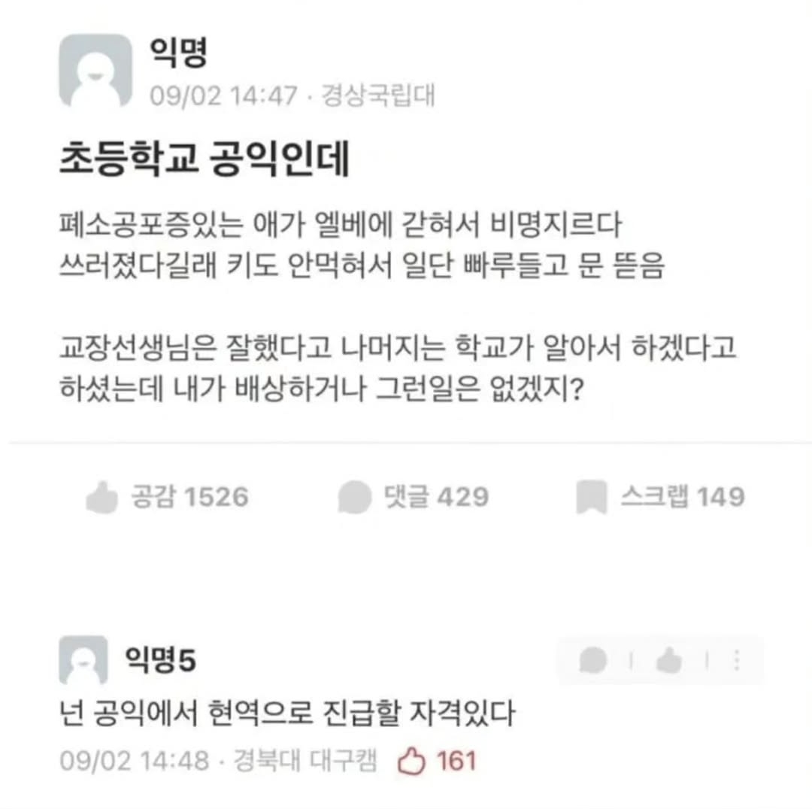
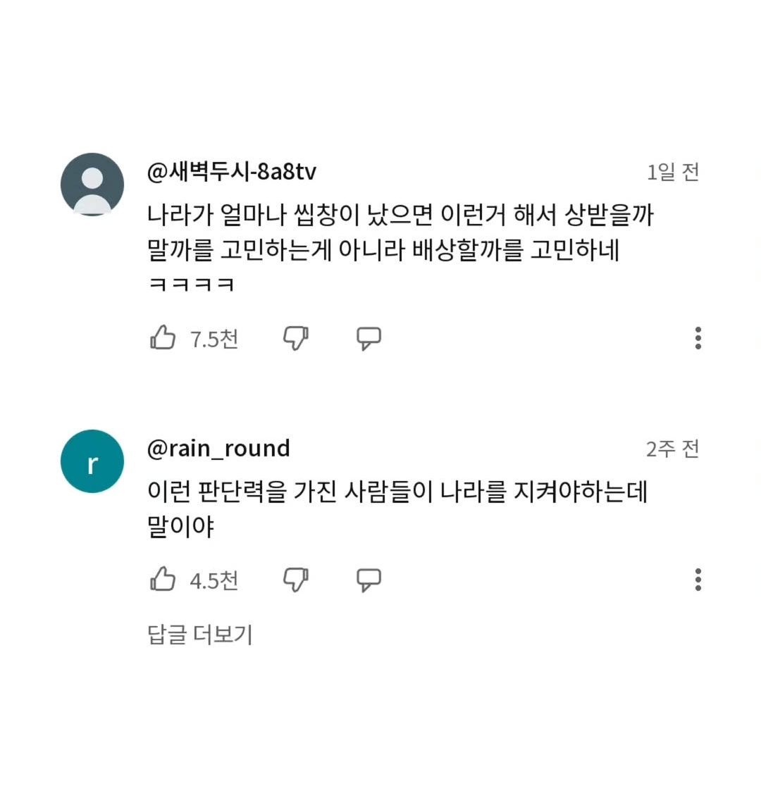

"참내 경비가 엘베 키 들고왔는데 뭐하는 짓이에요?"
엘베문 위에 비상열쇠 돌리고 수동으로 열어야 되는 거 아냐?
키도 안 먹는다는거보니 안 된다는거 아닐까
문 억지로 열면 추락할수있다고 써있어서 무서워서 저렇겐 못하겠던데 ㅋㅋ 그낭 고장나니까 겁준거였을라나
문을 열면 추락 한다는게 문 열면 엘베가 추락하는게 아니라 사람이 추락할수있다는 소리아닐까
와 그런거였나 나 십수년간 잘못알고있었네 ㅋㅋ
엘베 수리하는거 보면 ㄹㅇ 밑에볼때 식은땀남 ㅋㅋ 끝이 안보이는 터널이 수직으로 되어있어서
상으로 현역 재입대 시키자
일단 저거 보상해라고 얘기나오면
취재가 시작되자 알아서 해결됨
이게 참 우기면 되는 세상이라지만 이런 글 볼 때마다 안타까워...
심폐소생술도 위험하고 남이 두들겨 맞는 거 중재했다가 때린 놈 맞은 놈 둘이 입 맞춰서 폭행범 되고 숨쉬다가 성 범죄자 되고
세상 살기 힘들다지만 구해준 사람 보따리 뜯는 일이라도 좀 그만 보였음 좋겄다
무조건적 구제 면책법이 필요함.. 어떤놈들은 그러다가 악용(실신한 여자를 때는이때다하고 성추행한다는)되면 어쩌냐는데 상식적으로 그런 극소수 폐해가 클지, 구조에 필요한 도움을 못받는 피해가 클지 재어볼수있을텐데 말야
이게 참 그런 개쌍놈은 극소수이긴 할 텐데 하필 존재해서 방해하는게 아쉽네
분명 사람 구하는 좋은 일이 더 많을 텐데 기억에 남는 것 충격적인 범죄 같어
진짜 잘했네
헐 요즘 학교에 엘베 있어?
학교? 교비 넘쳐나서 걱정 없을듯